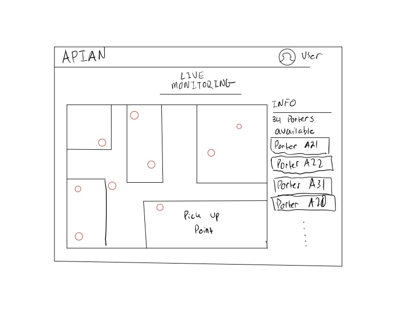
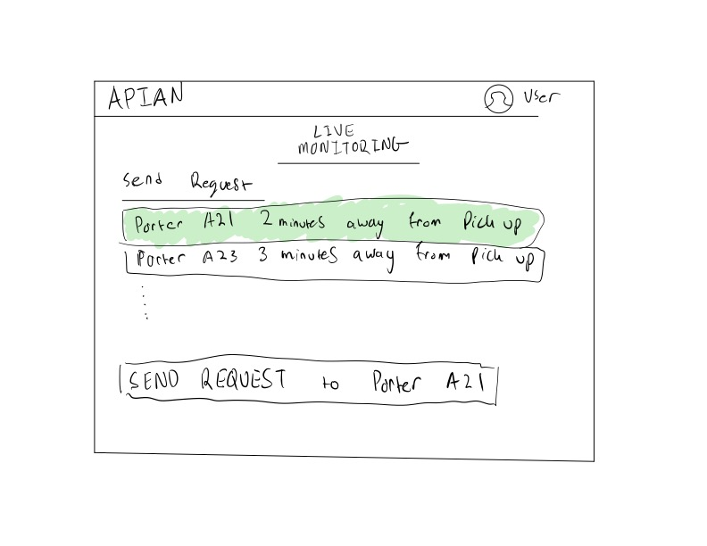
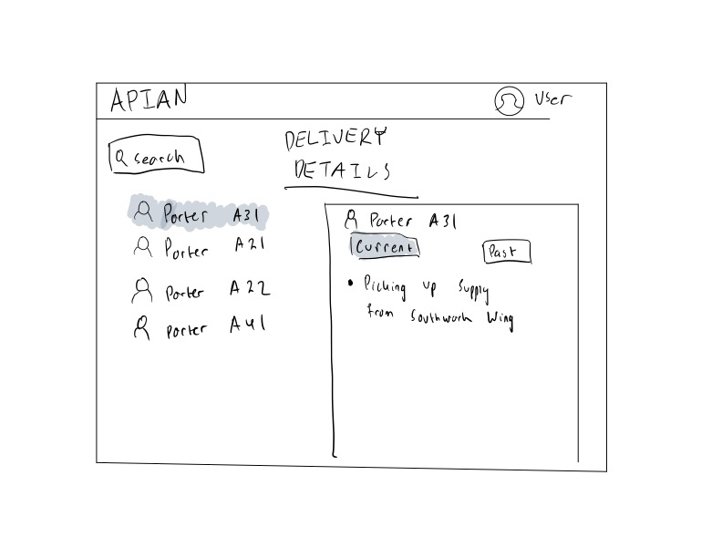
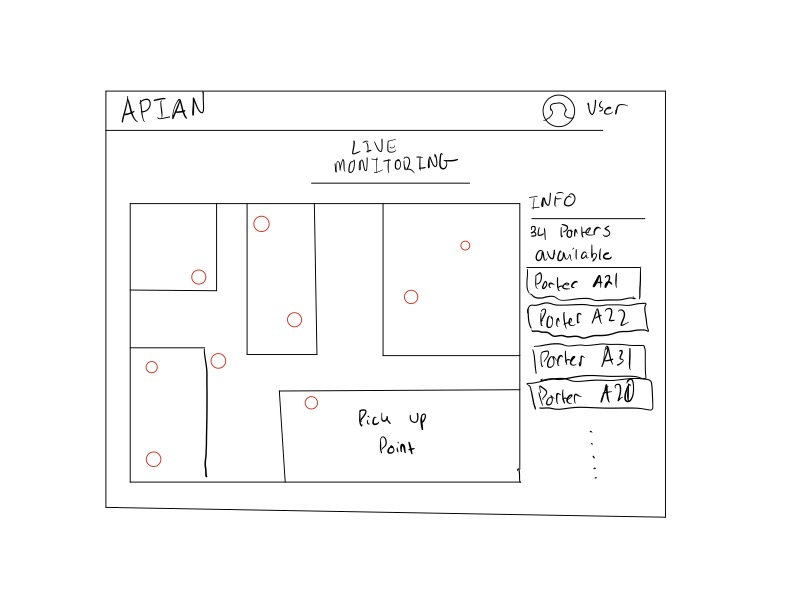
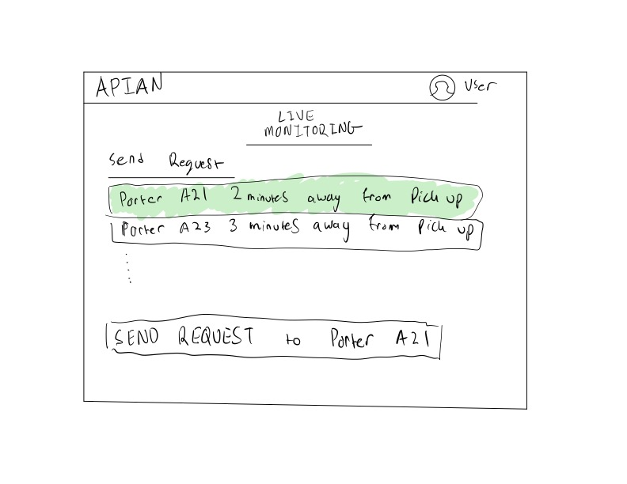
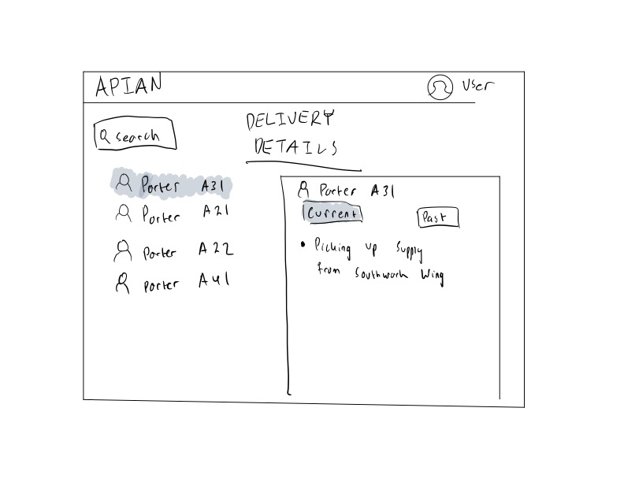
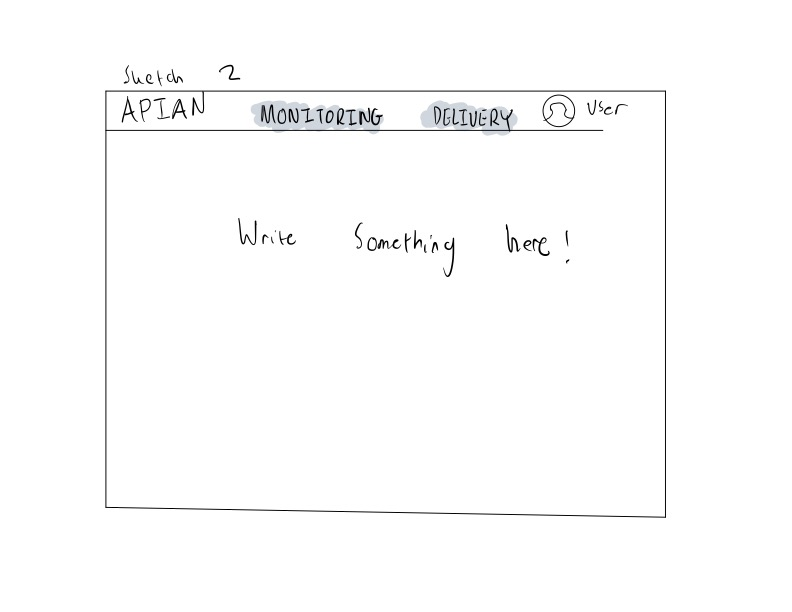
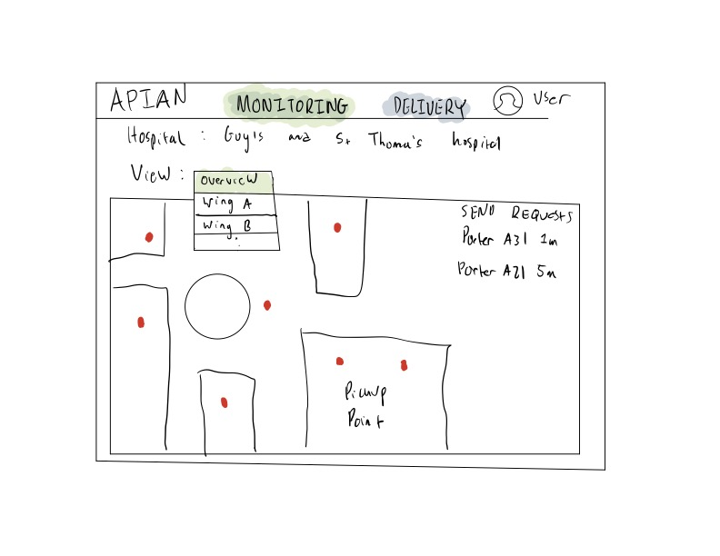
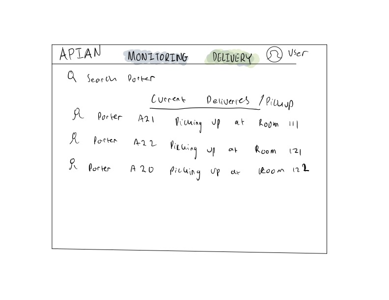
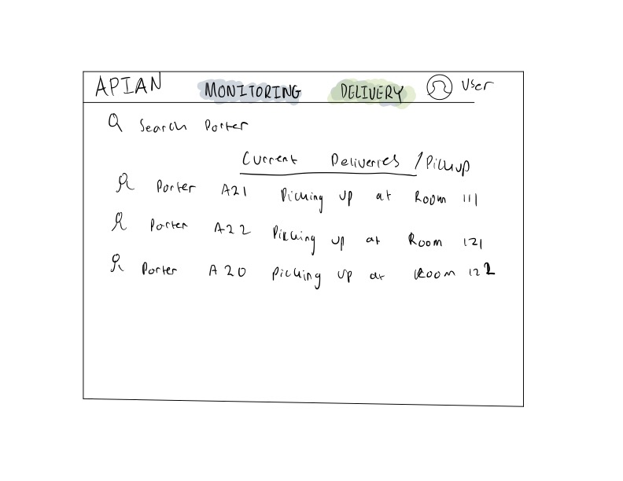

UI/UX
Sketch 1
 





After consulting with our client with regards to the different requirements our project should have, we started sketching our first design by hand drawing. Some of the important requirements of the website is that the medical staff dispatcher should be able to:
- Track live location of porters.
- View which porters are available or not.
- Send delivery requests to available porters based on the nearest location to pick-up point.
Sketch 2


 

For our second sketch, it was still pretty much similar to the first one although we made subtle changes such as adding a view option in the live monitoring page to see different parts of the hospital. Moreover, we created a table for the delivery request page to make things much more organized. The purpose of this sketch is just for comparison with our first one before proceeding to create interfaces on Figma.